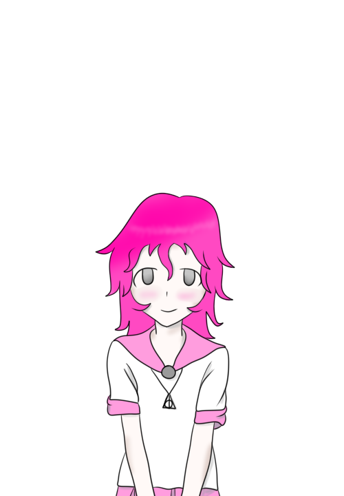
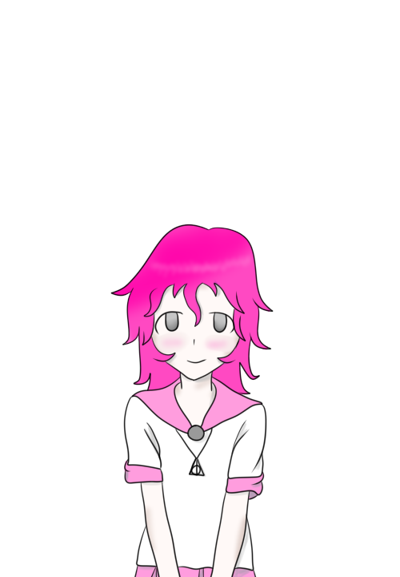
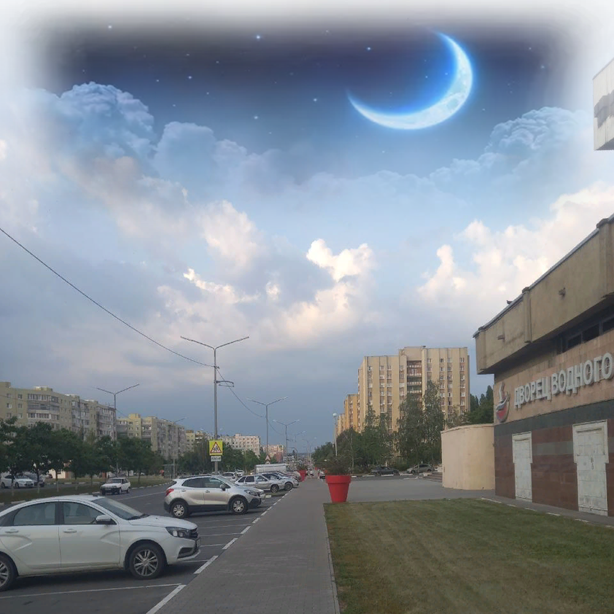
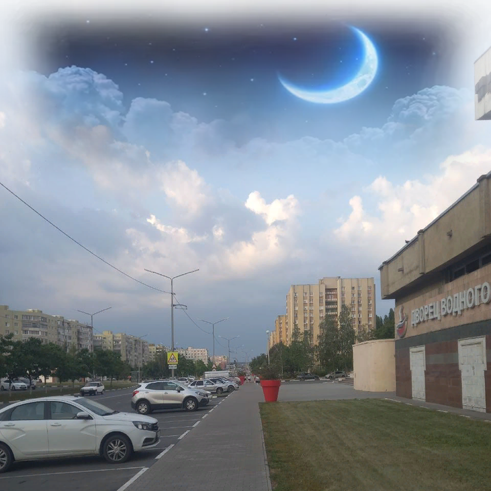

Game development(Разработка игр)
With music in heart(С музыкой в сердце)
Игра в жанре визуальная новелла, повествующая о группе друзей из музыкального кружка, которым предстоит организовать концерт с целью поиска спонсоров. Самая первая игра, поэтому довольно сумбурная и не самая продуманная.
Ссылка на скачивание
Real-Unvisual!(Реально - невизуально!)

Вторая полноценная новелла с большим количеством интерактива. Вы душа компании? Каждый день проводите в огромном количестве событий, и Вам это нравится? Тогда это игра не для Вас. Она для тех, кто мечтает о такой жизни. Познакомьтесь со своими друзьями: Аней, Кидой, Беттой, Лайтом, Митом и Дейвом по прозвищу Сапог. Они заменят реальных друзей (по крайней мере, они попробуют!).
Ссылка на скачивание
Department of IT(Отделение информационных технологий)
Окажитесь студентом первого курса в загадочном колледже, полном мистических происшествий и разгадайте, кто за всем этим стоит. Иллюминаты? Масоны? Заведующая? Или у тебя просто бурное воображение? Как бы не так!
Ссылка на скачивание


 



 
